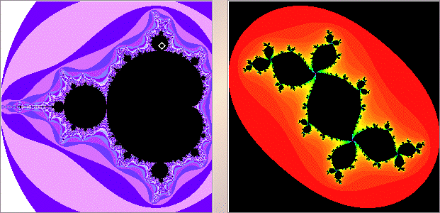

|  |
| The left window shows the quadratic Mandelbrot set. The white diamond indicates we have selected a point in a 3-cycle disc. |
| The right window shows the Julia set corresponding to the selected point. |
| Click on the Julia set to see the cycle. |
Return to Samples.